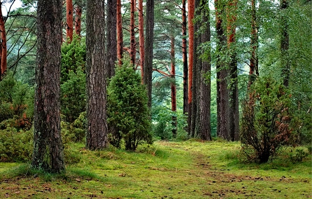

Nasza historia
Nadleśnictwo jest podstawową, samodzielną jednostką organizacyjną Lasów Państwowych działającą na podstawie ustawy o lasach. Podlega Regionalnej Dyrekcji Lasów Państwowych, która prowadzi nadzór i koordynuje działania na swoim terenie. Nadleśnictwa dzielą się na leśnictwa.
Leśnictwa są podstawową jednostką terenową w nadleśnictwie, w której bezpośrednio prowadzona jest gospodarka leśna. Leśnictwem kieruje leśniczy. W skład nadleśnictwa wchodzi 12 leśnictw.
WięcejSpotkaj sie z naszymi pracownikami
Nasi ludzie to profesjonaliści w swoim fachu. Pełnią odpowiedzialne funkcje w naszym zespole
Kamil Nowak
Dowódca drwali
Ola Chlipała
Administracja

Robert Wójcik
Księgowy
Stefania Gryn
Sekretariat
Dołącz do naszego zespołu i wspólnie z nami dbaj o zielone płuca naszej planety!
RekrutacjaW takich miejscach pracujemy
Kontakt z dziką, prawdziwą naturą należy do nieocenionych zalet tej pracy!
